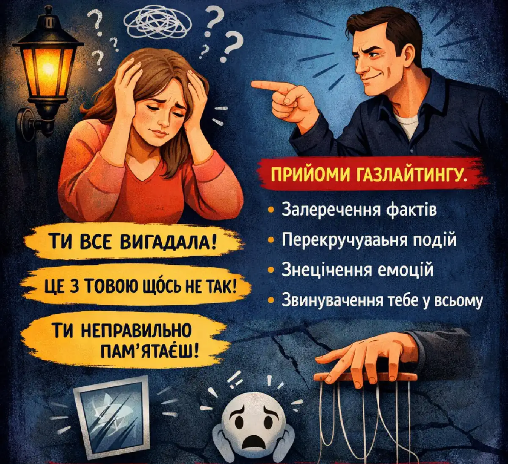

+38(068) 79 72 782
+38(068) 79 72 782Газлайтинг що це таке
Тиха маніпуляція, яка руйнує впевненість


Безкоштовна консультація, працюємо цілодобово 24/7
Тиха маніпуляція, яка руйнує впевненість

Газлайтинг — це форма психологічної маніпуляції, при якій людина змушує іншу сумніватися у своїй пам’яті, сприйнятті та адекватності. Це явище часто зустрічається в токсичних стосунках і особливо яскраво проявляється в сім’ях, де є залежність від алкоголю або наркотиків. При газлайтингу одна людина систематично спотворює факти, заперечує очевидне і перекладає відповідальність, формуючи в іншої почуття провини і невпевненості. У результаті жертва починає сумніватися в собі, втрачає впевненість і стає більш уразливою до подальшого впливу.
З часом такий вплив може призвести до серйозних психологічних наслідків. Людина перестає довіряти власним відчуттям і думкам, постійно шукає підтвердження своєї правоти в оточуючих і все частіше сумнівається навіть в очевидних речах. Це створює внутрішній конфлікт і посилює емоційне напруження. Особливо небезпечний газлайтинг тим, що він діє поступово і непомітно. На перших етапах це можуть бути поодинокі фрази або сумніви, які не викликають сильного занепокоєння. Однак з часом така поведінка стає систематичною, і людина все глибше занурюється у стан невпевненості та залежності від думки маніпулятора.
У контексті залежності газлайтинг часто використовується як спосіб приховати проблему і уникнути відповідальності. Залежна людина може заперечувати факт вживання, знецінювати переживання близьких і переконувати їх у тому, що ситуація не є серйозною. Це дозволяє їй продовжувати вживання, не стикаючись із реальними наслідками своїх дій. Близькі люди в таких умовах починають сумніватися у своїй оцінці того, що відбувається. Вони можуть виправдовувати залежного, шукати причини його поведінки в собі або ігнорувати тривожні ознаки. Поступово формується спотворена картина реальності, в якій проблема залежності ніби «розмивається» або здається менш значущою.
Крім того, газлайтинг часто супроводжується емоційним тиском, маніпуляціями і знеціненням. Людині можуть навіювати, що вона «занадто гостро реагує», «перебільшує» або «сама винна» у тому, що відбувається. Це посилює почуття провини і робить її ще більш уразливою. Газлайтинг — це не просто конфлікт або розбіжності. Це систематичний вплив, спрямований на контроль і пригнічення особистості іншої людини. Усвідомлення цього факту є першим кроком до захисту своїх меж і відновлення психологічної рівноваги.
Якщо пояснити просто, газлайтинг — це коли вам постійно говорять, що ви «не так зрозуміли», «вигадуєте» або «занадто гостро реагуєте», навіть якщо ви впевнені у своїй правоті. Поступово такі фрази починають повторюватися все частіше і сприйматися як норма, через що людині стає все складніше відстоювати свою точку зору. Це не разова ситуація, а систематична поведінка, спрямована на підрив упевненості людини в собі. З часом жертва починає сумніватися у своїх почуттях, думках і навіть спогадах. Їй може здаватися, що вона дійсно помиляється, неправильно оцінює те, що відбувається, або перебільшує проблему.
Людина починає частіше ставити собі запитання: «А раптом я дійсно не правий?», «Може, я занадто гостро реагую?», «Може, я все вигадав?». Ці сумніви поступово підточують внутрішню опору і знижують упевненість у власних відчуттях. У результаті жертва все менше довіряє собі і все більше орієнтується на думку іншої людини, навіть якщо вона суперечить очевидним фактам. Це робить її більш залежною від маніпулятора і ускладнює здатність самостійно приймати рішення.
З часом людина може почати уникати обговорення важливих тем, щоб не стикатися із знеціненням або критикою. З’являється страх помилитися, сказати «не те» або знову бути звинуваченою в неправильному сприйнятті ситуації. Газлайтинг поступово руйнує внутрішню впевненість людини, підміняючи її сумнівами і залежністю від чужої думки, що робить його особливо небезпечною формою психологічного впливу.
У людей з алкогольною або наркотичною залежністю газлайтинг зустрічається досить часто. Це пов’язано з тим, що залежність практично завжди супроводжується запереченням проблеми і спробами уникнути відповідальності за свою поведінку. Психіка залежної людини прагне захистити звичну модель життя, навіть якщо вона руйнівна. Залежна людина може: заперечувати факт вживання, стверджувати, що «все під контролем», звинувачувати близьких у перебільшенні проблеми, перекладати відповідальність за свою поведінку, спотворювати реальні події Такі дії дозволяють їй продовжувати вживання, не стикаючись із наслідками і не визнаючи проблему. Більше того, з часом маніпуляції можуть ставати все більш вираженими і регулярними.
Наприклад, залежний може запевняти, що «випив зовсім небагато», навіть якщо це не відповідає дійсності, або стверджувати, що оточуючі «просто чіпляються». Він може переконувати близьких, що проблема надумана, а будь-які спроби поговорити про лікування — це «тиск» або «контроль». Також часто використовується перекладання провини: залежний може говорити, що почав вживати через стрес, проблеми в сім’ї або поведінку інших людей. У результаті близькі починають відчувати відповідальність за те, що відбувається, і ще більше залучаються в ситуацію.
Поступово це призводить до того, що реальність спотворюється не тільки для самого залежного, але й для його оточення. Рідні можуть почати сумніватися у своїх спостереженнях, виправдовувати поведінку людини і відкладати звернення за допомогою. У більшості випадків такі прояви не завжди є усвідомленою маніпуляцією. Це частина механізму залежності, який спрямований на її збереження. Однак це не робить газлайтинг менш небезпечним для близьких. Тому розпізнавання подібних моделей поведінки — важливий крок до того, щоб не піддаватися маніпуляціям, зберегти власні межі і своєчасно звернутися за професійною допомогою.
Газлайтинг у даному випадку — це захисний механізм. Залежна людина не завжди усвідомлено маніпулює, але її психіка прагне зберегти звичну модель поведінки, навіть якщо вона завдає шкоди їй самій і оточуючим. Будь-які спроби вказати на проблему можуть сприйматися як загроза, тому включаються психологічні способи захисту, одним із яких і є спотворення реальності. Основні причини:
Таким чином, газлайтинг стає способом захисту залежності та її «підтримки». Він допомагає залежній людині знизити внутрішнє напруження і уникнути зіткнення з неприємною правдою про свій стан.
Крім того, визнання проблеми часто пов’язане з необхідністю змінювати спосіб життя, відмовлятися від звичок і брати на себе відповідальність за наслідки. Для багатьох це викликає сильний страх і опір. У таких умовах простіше переконати себе і оточуючих, що «нічого серйозного не відбувається», ніж визнати необхідність лікування. Газлайтинг також дозволяє залежному зберігати ілюзію контролю. Він може переконувати близьких, що сам впорається, що ситуація тимчасова або не потребує втручання. Це дає можливість продовжувати вживання, не стикаючись із тиском з боку оточуючих.
З часом такі механізми закріплюються і стають звичною моделлю поведінки. Залежний починає автоматично заперечувати очевидне, виправдовувати свої дії і спотворювати факти, навіть не замислюючись про це. За такою поведінкою часто стоять не злий умисел, а глибинні психологічні процеси, пов’язані із залежністю. Однак це не скасовує того, що газлайтинг має руйнівний вплив на близьких людей. Тому важливо вчасно розпізнавати такі механізми і вибудовувати межі, щоб не залучатися до спотвореної реальності і зберегти власне психологічне здоров’я.
З часом постійний тиск і спотворення фактів починають суттєво впливати на сприйняття близьких людей. Вони поступово втрачають упевненість у своїх відчуттях і починають сприймати ситуацію через призму слів залежної людини. Вони можуть:
Це призводить до формування співзалежних стосунків, у яких реальність підміняється зручною для залежного версією подій. Близькі починають підлаштовуватися під поведінку залежного, уникати конфліктів і намагатися «згладити» ситуацію, навіть якщо це шкодить їм самим.
Поступово людина може повністю втратити відчуття власних меж. Її емоційний стан починає напряму залежати від поведінки залежного: настрій, тривога і навіть самооцінка стають прив’язаними до ситуації в сім’ї. Виникає постійне напруження, очікування проблем і страх погіршення стану близького. Крім того, у співзалежних стосунках часто формується звичка брати на себе надмірну відповідальність. Близькі можуть намагатися «врятувати» залежного, контролювати його поведінку, вирішувати його проблеми і виправдовувати його вчинки перед оточуючими. Це лише посилює замкнуте коло, у якому залежність продовжує існувати, а психологічний стан сім’ї погіршується.
З часом людина може настільки звикнути до спотвореної реальності, що перестає помічати, де проходить межа між правдою і маніпуляцією. Це робить вихід із такої ситуації більш складним і потребує усвідомленої роботи над відновленням власного сприйняття і емоційного стану. Тому важливо вчасно розпізнавати ознаки газлайтингу і співзалежності, щоб зберегти внутрішню опору, відновити ясність мислення і почати вибудовувати більш здорові і безпечні стосунки.
Газлайтинг і співзалежність тісно пов’язані між собою. У співзалежних стосунках одна людина (найчастіше близька залежного) починає підлаштовуватися під його поведінку, ігноруючи власні потреби, бажання і емоційний стан. Поступово її життя починає обертатися навколо проблеми іншої людини. Газлайтинг посилює співзалежність, оскільки:
У результаті людина залишається в руйнівних стосунках, навіть розуміючи, що ситуація шкідлива. Вона може усвідомлювати проблему, але при цьому відчувати, що не може вплинути на те, що відбувається, або вийти з цього кола. З часом формується стійка модель поведінки, при якій людина починає ставити потреби залежного вище за власні. Вона може виправдовувати його дії, терпіти емоційний тиск і ігнорувати власний стан заради збереження «спокою» або ілюзії контролю над ситуацією. Газлайтинг у таких стосунках закріплює відчуття, що без залежної людини неможливо прийняти правильне рішення. Жертва все частіше сумнівається в собі, шукає підтвердження своїх думок ззовні і втрачає здатність довіряти власному сприйняттю.
Крім того, з’являється страх змін. Навіть якщо людина розуміє, що стосунки завдають шкоди, їй може здаватися, що без них буде ще гірше. Це утримує її в замкнутому колі, де залежність однієї людини і співзалежність іншої підтримують одна одну. Вихід із таких стосунків можливий. Першим кроком стає усвідомлення проблеми і визнання того, що власні почуття і потреби мають значення. Робота з психологом, підтримка близьких і поступове вибудовування особистих меж допомагають відновити внутрішню стійкість і вийти з руйнівного сценарію.
Є ряд ознак, які можуть вказувати на газлайтинг:
Якщо подібні ситуації повторюються регулярно — це серйозний сигнал. Такі прояви рідко бувають випадковими: як правило, йдеться про систематичний психологічний вплив. З часом людина може помітити, що все частіше виправдовується, навіть коли не відчуває своєї провини. З’являється звичка «перевіряти» свої думки і спогади, сумніватися у власних відчуттях і шукати підтвердження в інших людей. Також може виникати внутрішнє напруження під час спілкування з цією людиною: страх сказати щось «не так», бути неправильно зрозумілим або знову зіткнутися із знеціненням. У результаті розмови стають напруженими, а людина починає уникати відкритого вираження своїх думок і почуттів.
Ще одна важлива ознака — поступова втрата впевненості в собі. Людина може помічати, що їй все складніше приймати рішення, відстоювати межі і довіряти власній оцінці ситуації. Це робить її більш уразливою до подальшого впливу. Важливо звертати увагу не тільки на окремі фрази, але й на загальне відчуття від спілкування. Якщо після розмов залишається відчуття розгубленості, провини або сумнівів у собі — це привід замислитися про можливий газлайтинг. Усвідомлення цих ознак — перший крок до захисту себе, відновлення внутрішньої опори і вибудовування більш здорових стосунків.
Встановлення особистих меж — ключовий крок у захисті від газлайтингу. Це допомагає зберегти психологічне здоров’я, не втрачати зв’язок із реальністю і не залучатися до руйнівних сценаріїв, де думка іншої людини починає повністю пригнічувати власне сприйняття. Межі дозволяють:
Ви не зобов’язані погоджуватися зі спотвореною реальністю іншої людини. Кожен має право на власну думку, почуття і сприйняття ситуації, навіть якщо вони не збігаються з позицією оточуючих. Встановлення меж — це не агресія і не спроба «контролювати» іншу людину, а спосіб захистити себе. Це може проявлятися у вмінні спокійно говорити «ні», припиняти розмову, якщо вона стає токсичною, і не вступати в безкінечні суперечки, де факти навмисно спотворюються. На практиці це може означати:
Спочатку це може бути непросто, особливо якщо людина вже звикла до співзалежної моделі поведінки. Може виникати почуття провини або страх зіпсувати стосунки. Однак з часом вибудовування меж допомагає відновити внутрішню опору, повернути впевненість у собі і знизити рівень емоційного напруження.
Газлайтинг і співзалежність можуть мати серйозний вплив на психоемоційний стан людини. Постійний тиск, сумніви в собі, почуття провини і тривожність з часом призводять до внутрішнього виснаження, зниження самооцінки і порушення психологічної рівноваги. У таких ситуаціях важливо не залишатися наодинці з проблемою і своєчасно звернутися за професійною допомогою.
Консультація психіатра дозволяє об’єктивно оцінити стан людини, виявити наслідки тривалого стресу і визначити необхідність подальшого лікування або підтримки. Спеціаліст допомагає розібратися в тому, що відбувається, пояснює механізми газлайтингу і співзалежності, а також допомагає відновити адекватне сприйняття реальності.
Ми надаємо консультації та допомогу в таких містах України, як Київ, Одеса, Харків, Дніпро, Львів, Черкаси та Запоріжжя, забезпечуючи доступ до кваліфікованої підтримки незалежно від місця проживання. Таким чином, консультація психіатра є важливою частиною допомоги при газлайтингу і співзалежності, дозволяючи не тільки полегшити поточний стан, але й запобігти більш серйозним психологічним наслідкам у майбутньому.
Після тривалого впливу газлайтингу людина може відчувати розгубленість, невпевненість і внутрішню спустошеність. Порушується довіра до себе, своїх почуттів і сприйняття реальності. Відновлення в таких випадках потребує часу, підтримки і поступової роботи над собою. Корисні кроки: визнати факт маніпуляції, відновити довіру до своїх відчуттів, обмежити контакт із джерелом тиску, звернутися до психолога або психотерапевта, зосередитися на власних потребах Процес відновлення не відбувається миттєво. На перших етапах людина може продовжувати сумніватися в собі, відчувати тривогу або почуття провини. Це природна реакція після тривалого психологічного тиску. Поступово, у міру усвідомлення ситуації і роботи над собою, внутрішній стан починає стабілізуватися.
Особливе значення має відновлення довіри до своїх почуттів і думок. Людина вчиться знову спиратися на власне сприйняття, прислухатися до себе і приймати рішення без постійної оглядки на чужу думку. Це допомагає повернути відчуття контролю над своїм життям. Обмеження контакту з джерелом газлайтингу також відіграє важливу роль. У деяких випадках це може бути тимчасова дистанція, в інших — повне припинення спілкування, якщо стосунки продовжують завдавати шкоди.
Підтримка спеціаліста дозволяє швидше і безпечніше пройти цей шлях. Психолог або психотерапевт допомагає розібрати пережитий досвід, відновити самооцінку і сформувати навички захисту від маніпуляцій у майбутньому. Поступово людина повертає відчуття контролю над своїм життям, зміцнює самооцінку і вчиться вибудовувати здорові стосунки, засновані на повазі і довірі. Газлайтинг — це серйозна психологічна проблема, особливо в контексті залежностей. Розуміння його механізмів допомагає вчасно розпізнати маніпуляції, захистити себе і зробити важливий крок до відновлення і внутрішньої стійкості.

Так, ми суворо дотримуємося повної конфіденційності на всіх етапах лікування. Інформація про пацієнта, діагноз та проходження терапії не передається третім особам. Звернення до нас не тягне за собою постановку на облік. Ви можете бути впевнені у безпеці та анонімності.
Програма лікування розробляється індивідуально після консультації з фахівцем. Враховуються вид залежності, її тривалість, фізичний та психологічний стан пацієнта. Такий підхід дозволяє підвищити ефективність терапії та знизити ризик зриву. Ми не використовуємо шаблонні рішення.
Так, ми супроводжуємо пацієнтів і після основного курсу лікування. Проводяться консультації, рекомендації щодо адаптації та профілактики рецидивів. За потреби можлива подальша психологічна підтримка. Це допомагає зберегти результат та повернутися до повноцінного життя.
Номер телефону:
+380 (68) 797 27 82
+380 (50) 021 69 57
Адресу наркологічного центра вашого міста уточнюйте за
телефоном
Працюємо: Київ, Одеса, Львів, Харків, Дніпро, Запоріжжя,
Черкасах, Чугуєві, Чорноморську, Кам'янському
Telegram: t.me/umbrellaplus
Графік работы: Цілодобово